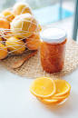

Orange Marmalade

Description
This orange marmalade is sweet, citrusy, and just the slightest detectable bitterness that balances out the sweetness and tang perfectly. Orange and lemon rinds are suspended throughout the thickened marmalade and it has a lovely orange color as well.
Ingredients
- 5 small navel oranges (about 2 1/4 lb. total), washed and scrubbed
- 1 medium (5 oz.) lemon, washed and scrubbed
- 6 cups water
- 3 ½ cups granulated sugar
Steps
- Slice off and discard tops and bottoms from oranges and lemon. Peel off and discard skin and pith of 3 of the oranges. Quarter all oranges and lemon lengthwise, then thinly slice into 1/8-inch slices, discarding seeds while slicing. Place all citrus slices in a large bowl and cover with water. Cover and refrigerate for at least 8 hours and up to 24 hours.
- Pour orange and lemon slices along with water into a large stainless steel saucepan or Dutch oven. Bring to a boil over high heat. Once boiling, reduce heat to medium and simmer, uncovered, stirring occasionally, until orange rinds have softened and can be cut with a spoon with slight resistance, about 45 minutes, skimming any foam that rises to top during process.
- Inspect 4 (1/2-pint) canning jars for cracks and rings for rust, discarding any defective ones. Immerse in simmering water until orange marmalade is ready. Wash new, unused lids and rings in warm soapy water. Place a small plate in the freezer.
- Add sugar to orange mixture and bring to a boil over high heat. Cook, stirring occasionally, until liquid has slightly reduced, bubbles are slightly larger in center, and a thermometer reads 220 degrees F (104 degrees C) about 40 to 45 minutes. Mixture will stay between 212 degrees F (100 degrees C) and 216 degrees F (102 degrees C) for the majority of this time and will rise to 220 degrees F (104 degrees C) when enough liquid has evaporated.
- To test if marmalade consistency is correct, remove plate from freezer and spoon a small amount of marmalade onto plate. Return plate to freezer for 1 minute. Remove plate from freezer; pull a finger through marmalade and across plate. It should leave a clean trail. If marmalade is runny and does not leave a clean trail, return mixture in pot to a boil over medium-high, and return plate to freezer. Boil marmalade, stirring often, for 3 minutes. Remove from heat, and retest thickness using plate again; repeat if necessary until it reaches desired thickness.
- Carefully pour marmalade evenly into the prepared canning jars. Let cool to room temperature, uncovered, about 3 hours. Seal jars. Chill until marmalade sets, at least 2 hours. Store in refrigerator for up to 2 weeks.